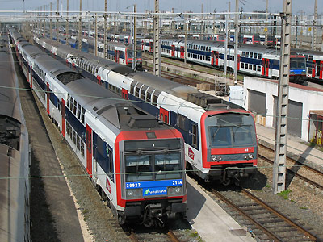

Automoteurs électriques
Les automotrices sont aussi vieilles que l'électricité en traction ferroviaire. La première application notable en France fut d'ailleurs le Métropolitain parisien dès 1900 ainsi que de nombreux tramways. Pourtant dans le "grand" chemin de fer, elles peinaient à se faire une place au soleil. Les équipements électriques de l'époque étant lourds et volumineux, les faibles puissances des automotrices les limitaient aux services omnibus.
C'est essentiellement en banlieue parisienne que ce concept se développa ainsi que sur les deux lignes de chemin de fer métrique de montagne (Train jaune de Cerdagne et Train du Mont Blanc). Les progrès techniques redorèrent leur blason dès les années 60 quand les rames inox vinrent chasser les vapeurs de la banlieue. A la décennie suivante, leur puissance s'accrut encore. Et, bénéficiant d'un poids léger et d'une motorisation mieux répartie, l'automotrice devint l'engin idéal pour explorer la grande vitesse où, parallèlement, les chocs pétroliers écartèrent les solutions se reposant sur des automoteurs à turbines à gaz.
Le règne des automotrices est à son apogée : TGV, Transilien, TER. L'automotrice moderne est puissante, multi-système et légère. Sa motorisation répartie lui permet des accélérations auxquelles aucune rame tractée ne peut prétendre. Au-delà de la technique, les automotrices apportent aussi des gains économiques. Réversibles, dotées d'attelages automatiques, elles nécessitent moins de manoeuvres et de personnel, et permettent une exploitation plus souple. En contrepartie, on leur reprochera une moindre polyvalence, la multiplication des équipements moteur, de conduite et de sécurité, l'immobilisation de rames complètes pour la maintenance et une offre en capacité plus rigide.
Mais, alors que la spécialisation du matériel redevient la norme, il semble que l'avenir en Europe soit fait de locomotives dédiées au Fret et d'une omniprésence des automotrices dans le transport de voyageurs.
Les Automotrices Ile de France
Les Inox
Z 5300
Z 6100
Z 6300
Z 6400
Les Z2N
Z 5600
Z 8800
Z 20500
Z 20900
Les NAT/Francilien Z 50000
Le matériel RER
MS61
Z 8100 MI79-MI84
Z 22500 MI2N
MI09
Les Automotrices Régionales
Z 7100
Les Z2
Z 7300 - 97300
Z 7500
Z 9500 - 99500
Z 9600
Z 11500
Les Automotrices de nouvelle génération
Z 21500 ZTER
Z 23500 TER 2N
Z 24500-26500 TER 2N NG
Z 27500 ZGC

Le dépôt des Ardoines (10/04/2006)